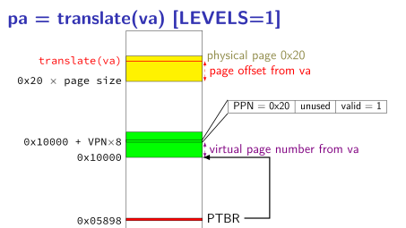
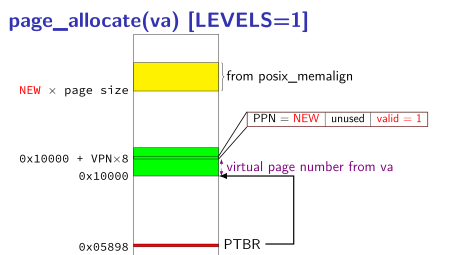
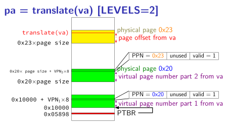

Your task:
This assignment has multiple submissions.
For all parts of this assignment, please follow the coding style described below (although we won’t grade it until part 3) and make sure your code does not give warnings when compiled with
-Wall1.For the first submission, you must complete one of the following:
ptbrandtranslatefrom item 2 for LEVELS=1 and POBITS=12. We describe below how you can test translate without workingallocate_page.ptbrandallocate_pagefrom item 2 for LEVELS=1 and POBITS=12.
(You can choose which to complete; if you attempt both, we will take the grade based on whichever option’s implementation is more complete.)
For the second submission, which is in preparation for a code review, you must complete all of items 2 and 3 below.
For the final submission, you must complete all parts below (and should fix any problems identified in the code review).
(This assignment will be worth considerably more than a normal one-week assignment. A vast majority of the grade for the assignment will be based on what you submit on the final submission. The submissions for the first two parts will be worth less than a normal submission. A significant part of the grade for the final submission will be based on functionality which should also have been completed in earlier submissions.)
Implement a simulation of multi-level page table lookup and allocation.
For the purposes of this simulation
physical
addresses are the ones your simulation program can access via pointers.The layout of this page table must be configurable via
config.h(example shown below), which will#definethe constants:LEVELS– number of levels in the page tablePOBITS– the size of page offsets (which, as described below, also determined the size of each page table)
Page tables will follow the format described below.
Although virtual addresses will be represented using 64-bit
size_ts, usually not all bits of thosesize_ts will be used; you may assume that any unused bits will be set to0when your code is called.Your code must implement API provided by a header file called
mlpt.h, an version of which is supplied here [last updated 6 Oct 2025]. It includes:extern size_t ptbr— page table base register; must be initially 0. Later, will contain the address of a page table your code allocates as a result of calls toallocate_page.size_t translate(size_t va)— translate the virtual addressvausing the currently setup page table. If the address is not allocated, return a value with all bits set to 1.int allocate_page(size_t start_va)— allocates and maps the virtual page which starts at virtual addressstart_va(if it is not allocated ready).If
start_vais not the address at the start of a page, returns-1. Ifstart_vais the address at the start of a page, but the page is already allocated, returns0; otherwise, returns1.Any data pages and page tables not yet allocated will be allocated using
posix_memalign. (Any data page or page tables already created, such as by a prior call toallocate_pagewill be reused. If the mapping is already entirely setup, the function should not change page tables.)
Prepare a
Makefilefor your code that:- produces, as its default target, a library called libmlpt.a that
exports the API defined in
mlpt.h(and does not export a function calledmain) - has CC, CFLAGS defined
- uses the defined argument variables (CFLAGS, etc.) in its work
- has correct dependencies for each target
- has
allandcleantargets
- produces, as its default target, a library called libmlpt.a that
exports the API defined in
Write a
READMEexplaining (at a minimum):- How to customize
config.h, with some guidance on how to pick values for that file. - Any known bugs or limitations (if you know of none, there is no need to say so; if you have an incomplete implementation so far, you’ll probably have some to document).
You may also include additional detail in your README.
If anyone or any resource helped your implementation, also include an
ACKNOWLEDGEMENTSfile acknowledging those people and/or resources.- How to customize
Include a
LICENSEandlicenses.txtfiles as described below.The interface we describe above does not support deallocating memory.
Propose some kind of interface to support de-allocation for the page table implementation. You can decide what kind of function(s) should be part of this interface, but it must be possible to implement your interface without modifications to
allocate_pageortranslate. Document this interface in your README, including at least:- function prototype(s)2 for the interface;
- an explanation of what any arguments to the function(s) mean;
- what each function will deallocate when it is called (including any way in which this depends on its arguments or other factors)
Then, implement this interface (including appropriate changes to
mlpt.hand your .c files).
1 Specification
We supply two header files.
1.1 config.h
config.h does nothing other than #defineing
two constants.
/** LEVELS = number of PTEs used to translate one address. */
#define LEVELS 1
/** POBITS = number of bits used for the page offset. */
#define POBITS 12and must continue to work even if we change their values. For
example, if we compile with a different config.h that
#defines LEVELS as 3 instead of
1, your code should create a 3-level page table instead of
a 1-level page table. Your code should work for all integer values of
LEVELS between 1 and 6 inclusive
and all integer values of POBITS between 4 and
18 inclusive. As an exception, it does not need to (but
may) support cases where (POBITS − 3) ×
(LEVELS + 1) > 60.
1.2 mlpt.h
mlpt.h defines the public API your code will use. You
are welcome to edit it, provided such edits will not cause testing code
to fail to compile.
/**
* Page table base register.
* Declared here so tester code can look at it; because it is extern
* you'll need to define it (without extern) in exactly one .c file.
*/
extern size_t ptbr;
/**
* Given a virtual address, return the physical address.
* Return a value consisting of all 1 bits
* if this virtual address does not have a physical address.
*/
size_t translate(size_t va);
/**
* Allocates and maps the virtual page which starts at virtual address `start_va`
* (if it is not allocated ready).
*
* If `start_va` is not the address at the start of a page, returns `-1`.
* If `start_va` is the address at the start of a page, but the
* page is already allocated, returns `0`; otherwise, returns `1`.
*
* Any data pages and page tables not yet allocated will be
* allocated using `posix_memalign`.
* (Any data page or page tables already created, such as by a prior
* call to `allocate_page` will be reused. If the mapping is already entirely
* setup, the function should not change page tables.)
*/
int allocate_page(size_t start_va);2 Pages, page table and ptbr format
Since
POBITSis the size of page offsets, pages occupy 2POBITSbytes (wherePOBITSis a constant defined inconfig.hthat we may change).Each page table will be an array of 8-byte page table entries. Each page table will occupy one physical page. (For example, with
POBITSset to 12, this means that page tables will contain 212/8 = 512 entries.)When interpreted as a
size_t, a page table entry’s least significant bit will indicate whether it is valid:If that bit is 0, then that indicates that there is no corresponding physical page. The remaining bits have no meaning, so you may use them however you wish.
If that bit is 1, then most significant
(64-POBITS)are the physical page number of the corresponding physical page. For a non-last-level page table entry, this will be the location of the next level’s page table; otherwise, this will be a location where (non-page-table) data could be stored.If
POBITSis set to 12, then PTE0x1234567812345679has a one in the low-order bit, and thus indicates the presence of a physical page or another level page table. IfPOBITSis 12, the physical page number (of the page or next page table level) is0x1234567812345. The corresponding physical address of the first byte of that page is0x1234567812345000.
There will be
LEVELSlevel of page tables (whereLEVELSis a constant defined inconfig.hthat we may change).The number of LEVELS and the size of page tables will determine the effective size of virtual addresses. Typically, the effective size of virtual addresses will be less than 64 bits, so the most significant bits of the
size_tpassed into translate and allocate_page will be unused. The virtual page number for the first part will appear immediately after these unused bits.With
POBITSset to 12 andLEVELSset to 2, page tables each contain 212/8 = 512 = 29 entries and only 30 bits from virtual addresses will be used: a 12-bit page offset and an 18-bit (2 times 9 bits) virtual page number, which will be divided into two parts for the page table lookup. Bits 21-29 will be used for virtual page number part 1, bits 12-20 will be used for virtual page number part 2, and bits 0-11 will be used for the page offset.The global variable
ptbrrepresents the page table register. It should be0(a null pointer) when no page tables are allocated. (Even though it is asize_t, it represents an address.)
3 Coding Style
4-space indentation
{on the same line as)and}on a line by itself; this means that else-if statements should be written likeif (condition) { ... } else if (condition) { ... } else { ... }No empty statements
Spaces around binary operators (including
<<,=,|, etc., but not including(or)or[or]or~))Space before
(if and only if it is preceded by a control construct (e.g.,if (buttranslate()No postfix
++or--unless part of an expression that uses the return value (such asa[i++]). Replacing with either prefix++or+= 1is OK.Lower-case identifiers with underscores separating words (identifiers include all function and variable names)
Upper-case
#defineconstantstypedefsuch that each type name uses a single identifier (e.g., nounsigned charexcept as part of atypedef).Use variable names that indicate the meaning of the contents of the variable; function names that indicate the purpose of the function; etc.
Use variable and function names which are consistent throughout your code;
Have a readable code organization; as rough (not strict) guidelines,
- If a sequence of lines of code depend upon one another more than they depend on the code around them and appear together in multiple places, they should be in their own function.
- Functions should be small enough to look at on one screen unless
that have a very orderly structure such as a long
switchwith simple code in thecases. - Comments should be present to describe any esoteric code decisions
- All code should have a clear purpose.
4 LICENSE and
licenses.txt
You need to choose a license for the code you supply. Include the
chosen license as LICENSE and a file
licenses.txt indicating your exploration of licenses.
This should be based on an existing family of license agreements. Unless you have had formal training in commercial law, we recommend using an existing license, not trying to create your own.
4.1 licenses.txt
In licenses.txt, list at least three licenses you
considered, include a short (sentence or two) summary of what they
seemed to say (ideally focused on the factors that mattered to you).
Then describe briefly (sentence or two) why you chose the license you
chose.
Your review should include
- at least one of GPL, LGPL, or AGPL
- at least one of MIT, BSD, Boost, Apache, or SQLite
All should be software licenses; this excludes licenses such as the various CC licenses for creative works, the SIL Open Font License, operating system licenses, etc.
4.2 LICENSE
Include a LICENSE file with the license agreement under
which you provide your code to us.
5 Not required: create a manual page
If you want to understand the real world a bit better, you might also
try writing a manual page. These are written in a language known as
roff
; to see an example of what this looks like, try running
cp /usr/share/man/man3p/poll.3p.gz ./
gunzip poll.3p.gz
less poll.3pto see the roff source of the manual page man 3p poll. I
don’t personally know anyone who writes roff by hand; generally it is
output from a source-code processing tool like doxygen3 or a converter like
pandoc from an easier-to-write format like markdown or
reStrucuredText.
Including man page allocate_page.3.gz and
translate.3.gz in your submission will earn you kudos. To
test that these work properly,
create a directory
man3(i.e.,mkdir man3)gzip the
rofffile and move it toman3/term_to_look_up.3.gz(e.g.,gzip translate.roff; mv translate.roff.gz man3/translate.3.gz) – note that some authoring tools may do some of this for youuse the
-Mflag withmanpointing to the parent directory ofman3(i.e.,man -M. 3 translate)
6 Hints
6.1 Common C issues
6.1.1 posix_memalign issues
posix_memalign(&x, ...)is similar tox = malloc(...)except that the addressxis guarenteed at a multiple of a particular value. The pointer to pointer passed intoposix_memalignis used in lieu of returning a pointer to the memory allocated. (The return value ofposix_memalignindicates success (0) or failure (non-zero error code).)If
posix_memalignis not defined after#include <stdlib.h>, adding#define _XOPEN_SOURCE 700or similar before any#includemay help.posix_memalignis not part of standard C; it’s something Linux and other Unix-like systems have added. If you are compiling with-std=c11or similar, then by default<stdlib.h>only includes things from the C standard. You can override this to request additional functions withfeature test macros
like_XOPEN_SOURCE. On Linux, the commandman feature_test_macrosbrings up the full documentation about thea available feature test macros.posix_memaligndoes not initialize the memory it allocates to any particular value (so you cannot rely on it being all 0s, for example).
6.1.2 using ptbr
(size_t*) ptbruses the value contained inptbras a pointer — in other words, it interpretsptbras a memory address and allows it to be dereferenced to access that memory address. In contrast,&ptbrgets a pointer to the value contained inptbr; in other words, it makes a pointer toptbr— derferencing that pointer will modifyptbritself, not things around the address it contains.
6.1.3 integers versus pointers
If you have an integer (such as something declared as a
size_t) and want to access the value stored there, you can convert it to a pointer and then dereference it:size_t address; size_t *address_as_pointer; ... address = /* some code that computes an address as an integer */; address_as_pointer = (size_t *) address; size_t value_from_address = *address_as_pointer;If you add to a pointer, it modifies the address based on the size of what the pointer points to. For example given:
size_t *ptr; size_t *new_ptr; ... new_ptr = ptr + 10;will set
new_ptrto an address that is10*sizeof(size_t) = 80more than new_ptr, similar to if one did:size_t temp; temp = (size_t) ptr; temp = temp + 80; new_ptr = (size_t*) temp;
6.2 Page table format and page numbers
- Our testing code will expect you to follow the page table format specified above. We specify the format in terms of page numbers rather than full addresses (which would have a page number and page offset). If our testing code seems to think that page table entries don’t contain the addresses you think they do, using a different format might be why.
6.3 Testing translate
without allocate_page
You can manually set
ptbrto a hard-coded page table array to testtranslatewithoutallocate_pgaebeing implemented. The below items show examples of how to do this with POBITS = 12 and LEVELS = 1.After including
<stdalign.h>, you can usealignas(4096)4 to make a variable be allocated at an address that is a multiple of 4096. Using this, you can declare an array ofsize_ts which takes up a (simulated)physical
page as follows:alignas(4096) static size_t page_of_data[512];We could also declare it as an array of 1-byte
chars as follows:alignas(4096) static char page_of_data[4096];though this would make it more difficult to set individual page table entries later.
By default, global-scope variables in C (and C++) will be zero-initialized, so
page_of_datadeclared as above will initially be an array of 0s. Since these have a valid bit of 0 in our page table format, you can testtranslate()with an empty page table by doing something like:alignas(4096) static size_t testing_page_table[512]; static void set_testing_ptbr(void) { ptbr = (size_t) &testing_page_table[0]; }(and calling
set_testing_ptbr())With a proper implementation of
translate(),translate(X)will be~0(all 1 bits) for every address (that is not too big to be a virtual address).Since page table entries are 8 bytes (the size of
size_t), setting index X of the array declared will set index X of the page table. So, let’s say (with POBITS = 12 and LEVELS = 1), we want to set virtual page 3 to point to a (simulated)physical
page of data. We’ll first allocate memory for that physical page of data as a global variable:alignas(4096) static char data_for_page_3[4096];Then, we need to convert the physical address of
data_for_page_3into a page table entry. To do this, we can first extract the page number from the address:size_t address_of_data_for_page_3_as_integer = (size_t) &data_for_page_3[0]; size_t physical_page_number_of_data_for_page_3 = address_of_data_for_page_3_as_integer >> 12; // instead of >> 12, we could have written: // address_of_data_for_page_3_as_integer / 4096 size_t page_table_entry_for_page_3 = ( // physical page number in upper (64-POBITS) bits (physical_page_number_of_data_for_page_3 << 12) | // valid bit in least significant bit, set to 1 1 );Then, we can store that page number at index 3 in a page table:
// assuming testing_page_table initialized as above and ptbr points to it testing_page_table[3] = page_table_entry_for_page_3;After this, we should observe that passing an address with virtual page number 3 to
translate()will returnphysical
addresses that are part ofdata_for_page_3. For example, we would expecttranslate(0x3045) == (size_t) &data_for_page_3[0x45]
6.4 Testing
allocate_page
Since
allocate_page’s primary job is to allocate memory when neeeded, for testing, I would recommend having some way to count how many allocations occur.With
LEVELS=1, there are three cases to test forallocate_page:- on the first call, two physical pages should be allocated — one to
create the page table (and set
ptbrto a non-zero value) and one to allocate a page for data - on later calls:
- if the page number supplied to
allocate_pagehasn’t been used before (is not marked valid in the page table), then one page for data should be allocated; - otherwise, no pages should be allocated
- if the page number supplied to
- on the first call, two physical pages should be allocated — one to
create the page table (and set
allocate_pageshould set page table entries pointed to byptbr. You can treatptbrlike an array ofsize_ts to examine them. For example, to print out the page table entry with index 3 (with POBITS=12, LEVELS=1):size_t *pointer_to_table; pointer_to_table = (size_t *) ptbr; size_t page_table_entry = pointer_to_table[3]; printf("PTE @ index 3: valid bit=%d physical page number=0x%lx\n", (int) (page_table_entry & 1), (long) (page_table_entry >> 12) );
6.5 Example for LEVELS=4, POBITS=12
The comments in the following code correctly describe the number of
pages that have ever been allocated assuming that
LEVELS is 4 and POBITS is 12. (With
smaller LEVELS values, either you would not use all the non-zero bits of
the virtual addresses being tested or the virtual page numbers would be
out of range.)
If you want to use this code to test your solution, it would be
useful to have a counter of how often posix_memalign is
called.
#include <stdio.h>
#include <assert.h>
#include "mlpt.h"
#include "config.h"
int main() {
// 0 pages have been allocated
assert(ptbr == 0);
allocate_page(0x456789abc000);
// 5 pages have been allocated: 4 page tables and 1 data
assert(ptbr != 0);
allocate_page(0x456789abc000);
// no new pages allocated (still 5)
int *p1 = (int *)translate(0x456789abcd00);
*p1 = 0xaabbccdd;
short *p2 = (short *)translate(0x456789abcd02);
printf("%04hx\n", *p2); // prints "aabb\n"
assert(translate(0x456789ab0000) == 0xFFFFFFFFFFFFFFFF);
allocate_page(0x456789ab0000);
// 1 new page allocated (now 6; 4 page table, 2 data)
assert(translate(0x456789ab0000) != 0xFFFFFFFFFFFFFFFF);
allocate_page(0x456780000000);
// 2 new pages allocated (now 8; 5 page table, 3 data)
}6.6 Diagrams of translate and lookup
All these assume a ptbr variable stored at address
0x5898, containing 0x10000 and a
POBITS setting of 12.
The diagrams show physical
memory addresses, with lowest
address at the bottom of the diagram and the address of each thing
labeled on the left-hand side. For example, translate(va)
labeling a line indicates that the translate(va)
(that is, the
return value of translate) is equal to the address of this line. Lines
with arrows at both ends marking a portion of the address space indicate
that the size of that space is based on the value of something. For
example, the region labeled virtual page number from va
indicates
that the size of that region is computed from the virtual page number
stored in va.
6.6.1 1-level translate

6.6.2 1-level allocate_page

6.6.3 2-level translate

6.7 reading
In addition to materials from slides, our reading on multi-level page tables work generally also include some relevant diagrams and pseudocode.